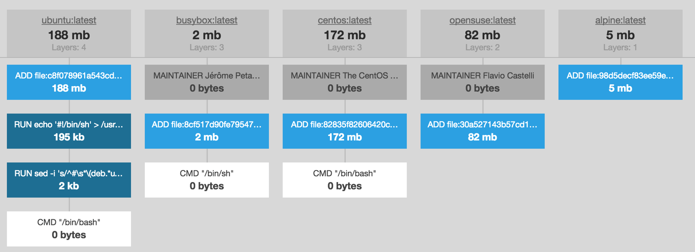

Showing (and hopefully playing with) the basics
of Containers, Docker and Docker Compose.
"Everything at Google runs in a container"
"We start over two billion
containers per week"
thats 3,300 containers a second,
thats 10,000 since you started
reading this slide.
Joe Beda, a senior staff software engineer from 2013
Why Containerisation?
Containerisation is increasingly popular because containers are:
-
Flexible
Even the most complex applications can be containerized.
-
Lightweight
Containers leverage and share the host kernel.
-
Interchangeable
You can deploy updates and upgrades on-the-fly.
-
Portable
You can build locally, deploy to the cloud, and run anywhere.
-
Scalable
You can increase and automatically distribute container replicas.
-
Secure
Generally, containers have a smaller possible attack space.
How?
Using simple linux namespaces to provide containers resources in a sandboxed
method.
There are 6 namespaces (these have mostly existed in the kernal for tweo decades!):
-
PID namespace
provides a master container process and all processes are joined to this.
-
Mount namespace
gives functionality for each container to have different folders.
-
UTS namespace
gives its processes their own view of the hostname and domain name.
-
Network namespace
Gives the processes that use it their own network stack.
-
IPC namespace
isolates various inter-process communication mechanisms such as message queues.
-
User namespace
maps the uids a process sees to a different set of uids (and gids) on the host.
Docker written in bash under 100 lines! See github.com/p8952/bocker.
More information on how
the internals of Docker works here.
Docker Concepts
-
Images
are created via Dockerfiles which can be pulled from a "Container Registry" an example is Docker Hub which has lots of public images -
Image Layers
are generated when the commands are run from in the Dockerfile -
Container
a running container created from an image -
Networks
a docker network is a seperate network within the docker system -
Volumnes
are similar to mounting a folder within the container -
Docker Compose
is a descriptive way of having a multi-container setup which can include volumnes, setup and networks. It is a Orchestration tool.
So the basic's
Lets test docker is setup on your machine and that you can load a simple container.
Here we are pulling the hello-world container from Docker Hub
You can see it on Docker hub here.
$ docker -v Docker version 18.09.2, build 6247962 $ docker run hello-world Unable to find image 'hello-world:latest' locally latest: Pulling from library/hello-world 1b930d010525: Pull complete Digest: sha256:92695bc579f31df7a63da6922075d0666e565cec... Status: Downloaded newer image for hello-world:latest Hello from Docker! This message shows that your installation appears to be working correctly. ... $ docker image ls REPOSITORY TAG IMAGE ID CREATED SIZE hello-world latest fce289e99eb9 3 months ago 1.84kB
Dockerfile
Docker can build images automatically by reading the instructions from a Dockerfile. A Dockerfile is a text document that contains all the commands a user could call on the command line to assemble an image.
Lets create a simple container
We'll create a similar container to the one used previously.
Create a Dockerfile with the contents shown.
We then build and run this, here we are using the hash of the container.
Although tagging the created container allows you to reference this container later as
shown.
# from helloworld/Dockerfile FROM alpine CMD ["echo", "Hello World"] $ docker build . Sending build context to Docker daemon 38.4kB Step 1/2 : FROM alpine ---> cdf98d1859c1 Step 2/2 : CMD ["echo", " Hello World"] ---> Running in cd305906eafa Removing intermediate container cd305906eafa ---> 273a4890c72a Successfully built 273a4890c72a $ docker run 273a4890c72a Hello World $ docker build -t helloworld . && docker run helloworld # Building output (removed!) Hello World
Image
An image is a collection of layers. Each layer is a instruction from the Dockerfile but what is recorded per layer is the change in the file system the command has actioned. This allows for caching if no changes are due.
$ docker image ls helloworld REPOSITORY TAG IMAGE ID CREATED SIZE helloworld latest 273a4890c72a 13 minutes ago 5.53MB $ docker history helloworld IMAGE CREATED CREATED BY SIZE 273a489.. 13 minutes ago /bin/sh CMD ["echo" " Hello World… 0B cdf98d1.. 2 weeks ago /bin/sh CMD ["/bin/sh"] 0B <missing> 2 weeks ago /bin/sh ADD file:2e3a37883f56a4a27… 5.53MB
Dockerfile Syntax
See more a more in-depth document here.
-
Inheritance
FROM php:7.2
Commands
RUN echo Hello World ----- CMD ["echo", "Hello World"] ----- USER www-data ENTRYPOINT ["echo"] CMD ["Hello World"]
-
Variables
ARG USER1=default ENV APP_HOME=/myapp RUN mkdir $APP_HOME
Network
EXPOSE 5900
-
Files
WORKDIR /myapp ADD file.xyz /file.xyz COPY --chown=user:group host_file.xyz /path/container_file.xyz # Always use COPY, ADD is the same as copy with extra features such as automatic un-compressing of files but this causes a clear of the cache layers following the running of the ADD.
Keep the images small!
-
Think Carefully About Your Application’s Needs
Ensure your are splitting out your application into multiple difference containers! -
Use a Small Base Image
Use the smallest base image which is available for your needs -
Use as Few Layers As Possible
This is linked to caching the images and ensuring you do not keep unnessary files between layers. -
Use .dockerignore files
When copying files into the container, you can ignore files to be copied via using .dockerignore. -
Squash Docker Images
This is useful when you'll be using a base wide container as a parent of other containers.
Base Images
Another Hello world?
In the first example, we are essentially doing the same as our previous
example. We are running an alpine image but modifying the command on the fly.
Next we are
able to sh (a basic command line shell similar to bash) into the container. The -it
instructs Docker to allocate a pseudo terminal connected to the container’s stdin; creating an
interactive shell in the container.
$ docker run alpine echo "Hello World" Hello World $ docker run -it alpine sh / # ls bin dev etc home lib media mnt opt proc root run sbin srv sys tmp usr var / # echo "Hello World" Hello World / #
Lets bring PHP into the mix
# php-cli-test/cli.php <?php echo "Hello World"; # php-cli-test/Dockerfile FROM php:7.3 COPY cli.php /var/helloworld/ WORKDIR /var/helloworld CMD ["php", "cli.php"]
$ docker build -t phpclitest . && docker run phpclitest Sending build context to Docker daemon 3.072kB Step 1/4 : FROM php:7.3 ---> 750fb3e3d6ef Step 2/4 : COPY cli.php /var/helloworld/ ---> Using cache ---> 528202483c1b Step 3/4 : WORKDIR /var/helloworld ---> Using cache ---> 630c3c1ee5f1 Step 4/4 : CMD ["php", "cli.php"] ---> Running in 86324a088d5e Removing intermediate container 86324a088d5e ---> adf4ed5f7c07 Successfully built adf4ed5f7c07 Successfully tagged phpclitest:latest Hello World%
And now serve it locally
# php-http-test/index.php <?php echo "Hello World"; # php-http-test/Dockerfile FROM php:7.3-apache COPY . /var/www/html/
Note this example has Apache within a PHP container. Its important to follow separation of concerns pattern when creating Docker images.
$ docker build -t phphttptest . && docker run -p 80:80 phphttptest # Once its running, go to localhost in your browser ... 172.17.0.1 - - [28/Jan/2018:09:16:59 +0000] "GET / HTTP/1.1" 200 240 "-" "Mozilla/5.0 (Macintosh; Intel Mac OS X 10_14_3) AppleWebKit/537.36 (KHTML, like Gecko) Chrome/71.0.3683.103 Safari/537.36" # Lets mount the directory so we can develop our index.php further $ docker run -v "$(pwd):/var/www/html/" -p 80:80 phphttptest # now modify index.php and refresh the browser
Orchestration
However a tool is still needed to:
- actually take a specification and assign containers to machines (scheduling)
- actually boot the specified containers on the machines through Docker
- logging output and monitoring resources
- respond to failures like container crashes
- deal with deployments/rollbacks/the constantly changing nature of the system
- and create cluster resources like service discovery, inter VM networking (DNS), load balancing, etc.
Docker Compose is Orchestration tool for local environments
docker-compose.yaml
The Compose file is a YAML file defining services, networks and volumes.
Here shows the most common options:
version: 3
services:
db:
image: postgres:9.4
volumes:
- db-data:/var/lib/postgresql/data
expose:
- "3306"
networks:
- backend
vote:
container_name: 'web'
build:
context: ./vote
environment:
- DB_HOST=db
ports:
- "5000:80"
networks:
- frontend
- backend
depends_on:
- db
networks:
frontend:
backend:
volumes:
db-data:
Next, lets create a Docker Compose setup of
a Nginx container and a PHP-FPM Container.
Lets make a simple form posting to PHP
# compose-php/index.html
<form action="form.php" method="post">What is your name? <input type="text" name="name"><button>Go!</button></form>
# compose-php/form.php
<?php
echo 'Hello ' . $_POST['name'];
# compose-php/site.conf
server {
listen 80;
index index.html;
location ~* \.php$ {
fastcgi_pass php:9000;
include fastcgi_params;
fastcgi_param SCRIPT_FILENAME /var/www/html/$fastcgi_script_name;
fastcgi_param SCRIPT_NAME $fastcgi_script_name;
}
}
# docker-compose.yaml
version: '3'
services:
php:
image: php:7.2-fpm-alpine3.8
expose:
- 9000
volumes:
- ./:/var/www/html
nginx:
image: nginx:1.16-alpine
volumes:
- ./:/etc/nginx/html
- ./site.conf:/etc/nginx/conf.d/default.conf
ports:
- "80:80"